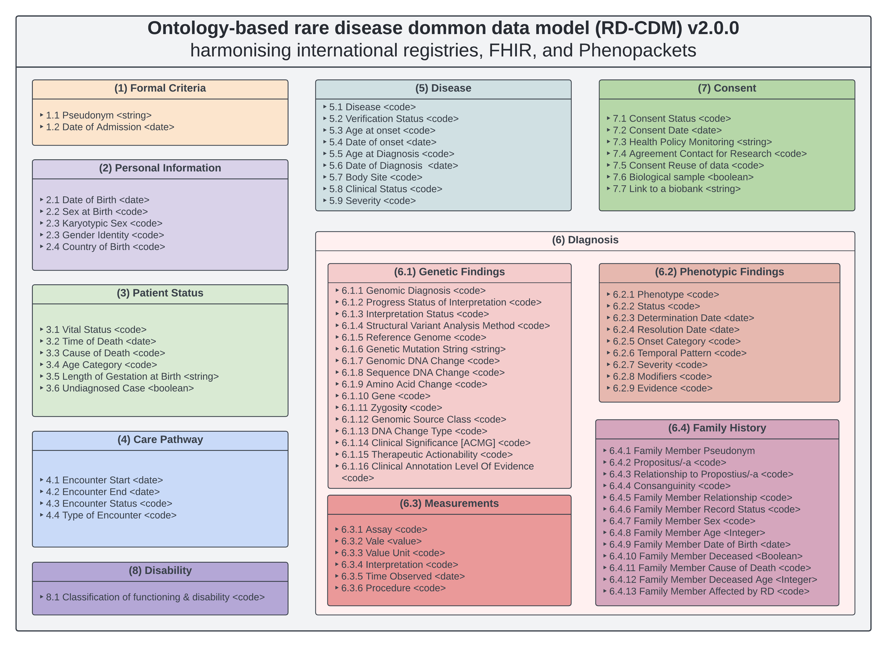
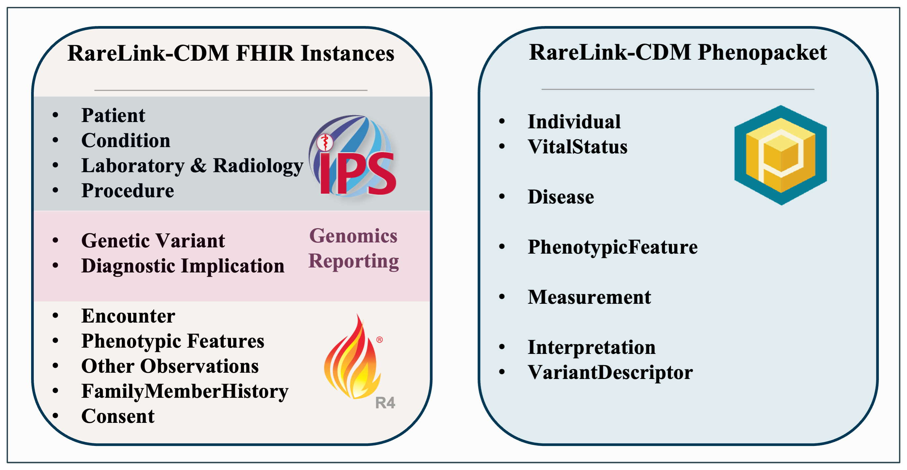

RareLink Implementation Guide - Local Development build (v2.0.0) built by the FHIR (HL7® FHIR® Standard) Build Tools. See the Directory of published versions
Home
| Official URL: https://rarelink.bih-charite.de/fhir/ImplementationGuide/rarelink-ig | Version: 2.0.0 | |||
| Draft as of 2025-12-15 | Computable Name: RareLinkImplementationGuide | |||
Welcome to the RareLink Implementation Guide
Welcome to the RareLink Implementation Guide – a non-balloted extension of the European Rare Disease Infrastructure Common Data Set (ERDRI-CDS). RareLink is a novel, open-source, and REDCap-based framework linking international registries to HL7 FHIR R4 and GA4GH Phenopackets to enable rare disease data interoperability.
Scope and Objectives
The RareLink project aims to:
- Enhance interoperability in data capture for rare disease registries using REDCap forms preconfigured with ontology-based instruments.
- Automate transformation of REDCap records and import of retrospective data into interoperable formats (FHIR resources and Phenopacket JSON) for downstream analysis and data sharing.
- Extend the ERDRI-CDS by utilising the ontology-based rare disease common data model, and its corresponding RareLink Common Data Model (RareLink-CDM) with accompanying FHIR profiles and value sets.
- Facilitate cross-registry research and clinical workflows by leveraging HL7 IPS and Genomics Reporting dependencies and facilitating the use of Phenopacket-based analysis tools.
Background
The RareLink framework builds on the novel Rare Disease Common Data Model (RD-CDM) https://doi.org/10.1038/s41597-025-04558-z harmonising the ERDRI-CDS with HL7 FHIR and GA4GH Phenopackets to enable standardized data exchange across registries and analysis tools.
Figure 1: Schematic overview of the entire ontology-based rare disease common data model

RareLink Software Architecture
RareLink consists of:
- The RareLink Documentation centralising all components of the RareLink framework, installation and user guides, as well as background and additional information.
- The RareLink-CDM: its corresponding REDCap data dictionary can be imported into any REDCap project with each instrument displaying a section within the RD-CDM for manual data entry of LinkML-based semi-automatic data capture. The profiles in this implementation guide represent the entire RareLink-CDM with all elements of the RD-CDM mapped to FHIR elements and can also be used for import via the Clinical Data Interoperability Services.
- A command-line interface (CLI) (
rarelink) interacting with the API of a local REDCap for:- REDCap API authentication, setup, and framework settings
- Interaction with REDCap to download or upload records or setup the data dictionary
- Setup of a Hapi-server and directly exporting RareLink-CDM data to FHIR resources
- Downloading of GA4GH Phenopackets
Further details on semi-automatic or manual data capture, FHIR import via CIDS, the CLI, the FHIR and Phenopackets module can be found in our RareLink documentation.
Note: The RareLink-CDM and its FHIR profiles are provided as a non-balloted extension of the ERDRI-CDS.
Figure 2: Schematic overview of the entire RareLink framework

FHIR Profiles & Dependencies
RareLink comes with FHIR R4 StructureDefinitions covering:
- HL7 International Patient Summary (IPS) v2.0.0
Dependency: IPS Implementation Guide - HL7 Genomics Reporting v3.0.0
Dependency: Genomics Reporting IG - RareLink-CDM Resource and Profile definitions
Figure 3: Schematic overview of the RareLink-CDM as both FHIR instances and a Phenopacket

Balloting status
The RareLink-CDM FHIR profiles and Implementation Guide remain in draft trial-use status and subject to formal governance—including versioning, conformance testing, stakeholder review, and the incorporation of changes arising from the ballot process—before achieving formal approval.
Example Instances
Validated example instances of all profiles are available in the repository:
Navigation
- Scope and Objectives – Project goals and deliverables
- Background – RD-CDM theory and ERDRI-CDS
- Software Architecture – Components and workflows
- RareLink-CDM – Data dictionary and REDCap integration
- Profiles – FHIR and Phenopacket definitions
- Implementation – Installation, configuration, and examples
- Additional Info – Contributing, changelog, FAQs
For questions or contributions, please see the contributing and contact section in our documentation or submit an issue on our GitHub repository.